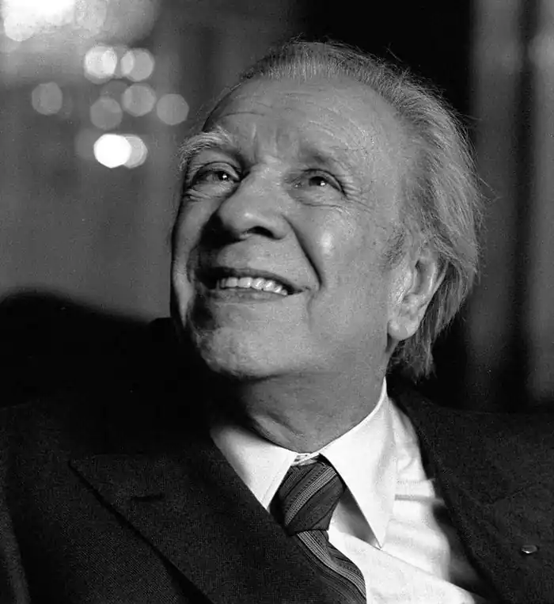

ХОРХЕ ЛУЇС БОРХЕС
(1899-1986)
Хорхе Луїс Борхес — одна з легендарних особистостей сучасного літературного світу. Тільки звичайне перерахування премій, нагород і титулів займе багато рядків: Коммендаторе Італійської Республіки, Командор ордена Почесного легіону "За заслуги в літературі і мистецтві", Кавалер ордена Британської імперії "За видатні заслуги" та іспанського ордена "Хрест Альфонсо Мудрого", доктор Сорбонни, Оксфордского й Колумбійського університетів, лауреат премії Сервантеса. Усюди його перекладають, вивчають, цитують. Однак Борхеса не тільки звеличують, але й знецінюють. У минулому він нерідко робив журналістам реакційні заяви на різні злободенні питання. Почувалася в цьому якась нарочитість (епатаж і настирлива ексцентричність), бажання шокувати активну передову суспільну думку Латинської Америки. Позиція Борхеса викликала здивування, суперечки, а то й заперечення з боку таких письменників, як Пабло Неруда, Габріель Гарсіа Маркес, Хуліо Кортасар, Мігель Отеро Сільва, проте вони завжди відгукувалися про Борхеса як про майстра і зачинателя нової латиноамериканської прози. Хорхе Луїс Борхес народився в Аргентині, але юність провів у Європі, куди його батько, професійний юрист, згодом професор психології, виїхав напередодні Першої світової війни на тривале лікування. Саме батько прищепив синові любов до англомовної літератури; цією мовою Борхес володів чудово: у 8 років було надруковано його переклад казки О. Вайльда "Щасливий принц". Згодом Борхес перекладав Кіплінга, Фолкнера, Джойса, В. Вульф. Крім англійської, він володів французькою, італійською, португальською, латиною. Після виходу на пенсію батька Борхеса родина виїхала до Швейцарії, а в 1919 році переїздить до Мадрида. Вірші й переклади молодого Борхеса друкуються в модерністських журналах. На самому початку 20-х років Борхес зблизився з гуртком молодих іспанських літераторів, що назвали себе "ультраїстами", котрі належали до літературної течії, проголосивши, що метафора — головний елемент, основа й мета поезії; все це відбилось на подальшій творчості письменника. Борхес тоді сповідував примарну, але палку революційність. Після повернення до Аргентини в 1921 році він примикає до лідерів місцевого абстракціоністського руху, випускає кілька збірок віршів у дусі усе того ж ультраїзму. А потім його творчий шлях зробив крутий поворот, очевидно, викликаний різкою зміною суспільного клімату в Аргентині. З державним переворотом 1930 року скінчилося ліберальне правління партії радикалів і почалася важка ера боротьби з фашистськими тенденціями в політичному житті країни. У цих умовах абстракціоністське експериментування висихає, Борхес з 1930 року зовсім залишає поезію, до якої повернеться лише в 60-ті роки, коли стане перед читачем зовсім іншим поетом, який остаточно порвав з авангардизмом. Після декількох років мовчання він з 1935 року починає одну за одною видавати свої прозаїчні книги: "Всесвітня історія безчестя" (1935), "Історія вічності" (1936), "Вимисли" (1944), "Алеф" (1949), "Нові розслідування" (1952), "Повідомлення Броуді" (1970), "Книга піску" (1975). У 30-ті роки, коли до влади в Аргентині приходять військові, Борхес підписує низку протестів проти свавілля аргентинського уряду. Наслідки цього виказали себе одразу ж: з міркувань благонадійності Борхесу відмовили в Національній премії за книгу новел "Сад розбіжних стежок", було заарештовано його матір і сестру, самого Борхеса позбавили місця роботи в бібліотеці. Допомогли друзі, котрі виклопотали для нього читання циклу лекцій в Аргентині й Уругваї. В цей час катастрофічно падає зір Борхеса: відбились наслідки невдалої операції та важка родинна хвороба (п'ять поколінь чоловіків-Борхесів помирали в повній сліпоті). У наступні десятиліття, крім служби в Національній бібліотеці, Борхес читає в університеті лекції з англійської літератури, багато займається філологією і філософією. У 60-ті роки, коли прийшла слава, здійснює кілька подорожей Європою й Америкою, час від часу виступає з лекціями (один з його лекційних циклів зібраний у книгу "Сім вечорів", 1980). Легендарність, "загадковість" особистості Борхеса прояснюється, тільки якщо проникнути в його творчість. Борхес пише новели фантастичні, психологічні, пригодницькі, детективні, іноді навіть сатиричні ("Найстарша сеньйора"), пише есе, що іменує "розслідуваннями", які відрізняються від новел лише деяким ослабленням фабули, не поступаючись їм у фантастичності. Пише прозаїчні мініатюри, що звичайно включає у свої поетичні збірники ("Діяч", 1960; "Хвала тіні", 1969; "Золото тигрів", 1972). Почавши з поезії, Борхес, по суті, назавжди залишився поетом. Поетом щодо слова й твору в цілому. Справа не тільки в разючому лаконізмі, що важко дається перекладачам. Адже Борхес аж ніяк не пише так званим "телеграфним стилем" 20-х років. У його класично чистій прозі немає буквально нічого зайвого, але є все необхідне. Він відбирає слова, як поет, затиснутий розміром і римою, ретельно витримує ритм оповідання. Він прагне до того, щоб оповідання сприймалось як вірш, часто говорить про "поетичну ідею" кожного оповідання і його "тотальний поетичний ефект" (очевидно, саме тому його і не приваблює велика прозаїчна форма — роман). В ультраїстських маніфестах що складали в 20-і роки Борхес і його соратники, метафора проголошувалася первинним осердям і метою поезії. Метафора в юнацьких віршах Борхеса народжувалася з несподіваного уподібнення, заснованого на зримій подібності предметів. Відійшовши від авангардизму, Борхес відмовився і від несподіваних візуальних метафор. Зате в його прозі, а потім і у віршах, з'явилася інша метафоричність — не візуальна, а інтелектуальна, не конкретна, а абстрактна. Метафорами стали не образи, не рядки, а твори в цілому,— метафорою багатошаровою, багатозначною, метафорою-символом. Якщо не враховувати цієї метафоричної природи оповідань Борхеса, більшість з них здаватимуться лише дивними анекдотами. Оповідання "Сад розбіжних стежок" можна прочитати як цікаву детективну історію, але й отут відчуємо глибинний метафоричний плин, де сад сприймається як ідеальний образ природи та Всесвіту. В процесі сюжету символ начебто втілюється й оживає: сад-лабіринт — це мінлива, примхлива, непередбачена доля; сходячись і розходячись, її стежки ведуть людей до неочікуваних зустрічей і випадкової смерті. Іноді в оповіданнях Борхеса помітне наслідування романтичній чи експресіоністській новелі ("Кола руїн", "Зустріч", "Письмена Бога"). Це не випадково: усе життя аргентинський прозаїк захоплюється Едгаром По, а в юності з захопленням читав моторошні новели австрійського експресіоніста Густава Мейрінка, в якого й перейняв інтерес до середньовічної містики. Але трактування подібних сюжетів у Борхеса інше: немає нічного мороку, що лякає, усе таємниче залито яскравим світлом і від страшного страшно не через загадковість, а через усвідомлення. Свою найзнаменитішу добірку оповідань Борхес назвав "Вимисли"; певною мірою так можна позначити й головну тему його творчості. Оповідання Борхеса не раз піддавали класифікації: то за структурою оповідання, то за міфологічними мотивами, що у них виявляли критики. Важливо, однак, при будь-якій диференціації не прогледіти головне — "прихований центр", як висловлюється сам письменник, філософську й художню мету творчості. Неодноразово, в інтерв'ю, статтях і розповідях, Борхес говорив про те, що філософія і мистецтво для нього рівнозначні й майже тотожні, що всі його багаторічні й великі філософські праці, що включали також християнську теологію, буддизм, даоїзм і т.п., були спрямовані на пошук нових можливостей для художньої фантазії. На дозвіллі Борхес з учнями та друзями любить створювати антології. У "Книзі про небеса і пекло" (1960), "Книзі про уявлюваних істот" (1967), "Коротких і неймовірних розповідях" (1967) уривки з давньоперсидських, давньоіндійських і давньокитайських книг, арабські казки, переклади християнських апокрифів і давньонімецьких міфів, уривки з Вольтера, Едгара По та Кафки. І в антологіях, і в оригінальній творчості Борхес хоче показати, на що здатен людський розум, які повітряні замки він уміє будувати, наскільки далеким від життя може бути політ фантазії. Але якщо в антологіях Борхес тільки захоплюється протеїз-мом і невтомністю уяви, то у своїх оповіданнях він, крім того, досліджує гігантські комбінаторні здібності нашого інтелекту, що грає все нові й нові шахові партії з універсумом. Як правило, оповідання Борхеса містять яке-небудь припущення, прийнявши яке, ми в несподіваному ракурсі бачимо суспільство, по-новому оцінюємо наше світосприймання. Серед борхесівських оповідань є також передбачення, застереження, інтерпретації. От одне з кращих його оповідань — "П'єр Менар, автор "Дон Кіхота". Якщо відвернутися на хвилину від вигаданого П'єра Менара з його вигаданою літературною біографією, ми бачимо, що в дикуватій, ексцентричній формі тут розглянутий феномен двоїстого сприйняття мистецтва. Будь-який твір, будь-яку фразу художнього твору можна читати ніби подвійним зором. Очима людини того часу, коли був написаний твір: знаючи історію і біографію художника, ми можемо, хоча б приблизно, реконструювати його задум і сприйняття його сучасників і, отже, зрозуміти твір у середині його епохи — такий спосіб обмірковує П'єр Менар, але відмовляється від нього. І інший погляд — очима людини XX століття з його практичним і духовним досвідом. Це саме те, що, на думку оповідача, намагався зробити П'єр Менар, який встиг "переписати", тобто переосмислити, лише три глави "Дон Кіхота": співвідношення між реальним автором, автором-оповідачем і вигаданим оповідачем, давню суперечку про перевагу або шпаги й пера, або війни й культури; звільнення Дон Кіхотом каторжників і висловлення при цьому дуже сучасних думок про справедливість, про правосуддя, що не повинне спиратися тільки на визнання засуджених, про могутність людської волі, якій до снаги перемогти будь-які випробування. Осучаснення класики трапляється дуже часто, але, як правило, залишається неусвідомленим. Неймовірне й непосильне підприємство П'єра Менара робить його наочним.